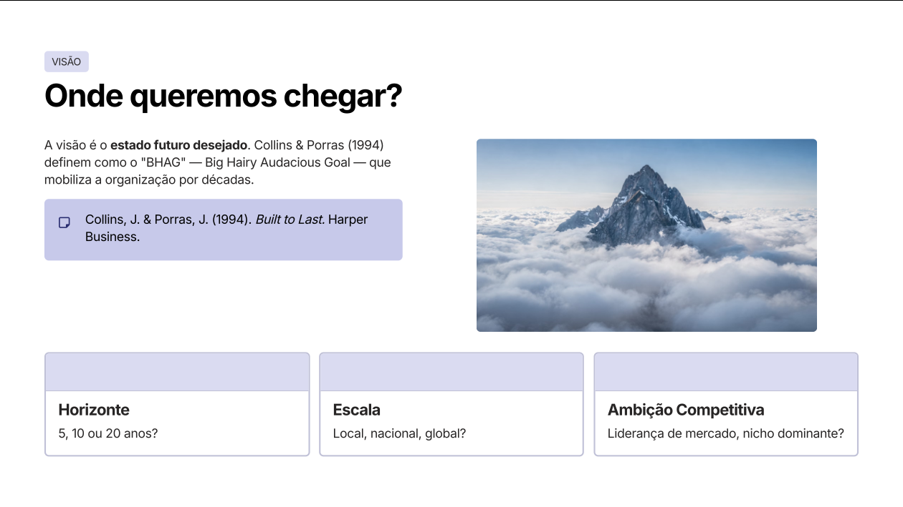

Capítulo 1
Missão, Visão e Objetivos
Ideias sem estratégia falham. A maioria das startups fracassa não por falta de inovação, mas por ausência de posicionamento claro e escolhas deliberadas (Porter, 1996).

Missão — Por que existimos?
Missão = propósito fundamental. Missões eficazes são duradouras e orientam decisões estratégicas (Collins & Porras, 1996).
- Valor gerado — Qual transformação entregamos?
- Público-alvo — Para quem criamos valor?
- Problema resolvido — Qual dor endereçamos?
Visão — Onde queremos chegar?
Visão = estado futuro desejado. Collins & Porras (1994) chamam de BHAG (Big Hairy Audacious Goal) — mobiliza a organização por décadas.
- Horizonte — 5, 10 ou 20 anos?
- Escala — Local, nacional, global?
- Ambição competitiva — Liderança? Nicho?
Objetivos Estratégicos
O que precisamos alcançar para realizar missão e visão? Objetivos devem ser:
- Mensuráveis — KPIs quantitativos (receita, market share, NPS).
- Com prazo — curto, médio, longo (Kaplan & Norton, 1992).
- Alinhados ao modelo — coerentes com proposta de valor e recursos.
Erro comum: missão genérica como "ser o melhor" ou "gerar valor". Sem especificidade de público, problema e transformação, a missão não orienta nenhuma decisão.